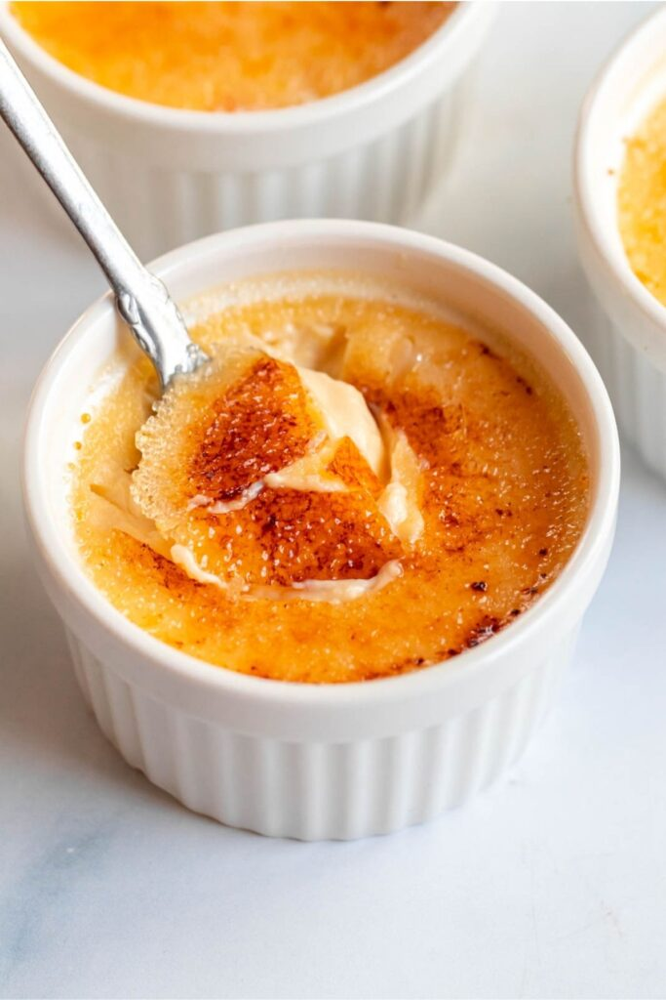

>
Creme Brulee
Creme Brulee

Description
A dessert consisting of a rich custard base topped with a layer of hardened caramelized sugar.
Creamy,sweet and delicious
Ingredients
- 1200g/mL or 5c heavy cream
- 1 fresh madagascar vanilla bean (sub 8g/2tsp vanilla extract)
- 160g or 3/4c+2Tbsp granulated sugar
- 2g or 1/2tsp salt
- 10 large eggs, whites and yolks separated
- 30-40g of sugar in the raw
Instructions
- Slice vanilla bean down 1 side then use a knife to scrape as much of the bean paste from inside the bean as possible.
- Add heavy cream to a small sauce pot along with vanilla bean paste and the scraped vanilla bean. Stir and heat over medium until temperature reaches 150F/65C then remove from heat and allow liquid and vanilla to steep for 10 minutes.
- Whisk together salt, sugar, and egg yolks. Add in about half of the seeped vanilla cream through a fine mesh strainer, whisking immediately to temper. Stir in second half of cream. Strain combined cream/egg sugar mixture through a fine mesh strainer, making sure to get all of the vanilla paste bits that may be stuck to the bowl.
- Pour custard mix into ramekins
- Using a butane torch, lightly and quickly heat the top of the custard to pop any bubbles that formed from pouring the cream.
- Wrap the top of each ramekin tightly with plastic wrap then pierce the top a couple of times with a sharp knife or cake tester. I place all ramekins on a rimmed baking sheet to make for easier loading into the oven.
- Load into a preheated 215F/100-105C oven to bake for 2 hours or until just set. They should be just a little jiggly, but not liquidy. Internal temp should read around 170F/77C+.
- Let it cool down for about 15min before efrigerating to fully cool for at least 2 hours